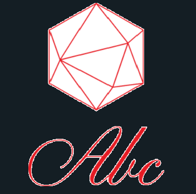
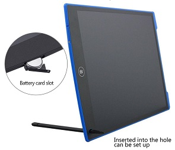

ABC Educational online shopping

Product Details
- High Quality: Electronic message board is made from the high quality materials, it is light, portable and durable.
- Screen Lock: Built in a screen-lock button to avoid the content erased accidentally. It is easy to keep your important message/note/drawing etc.
- Large Versatile Screen : With a large bright screen, the digital writing tablet allows you to write enough contents and promises you to writing freely.
- Eco-friendly & Eyes protection: You can make it reusable,LCD screen without radiation and glare, all protect eyes ,be more safe and comfortable when you create work for a long time.
- Wide Applications & Ideal Gift: Electronic writing tablet, a greater helper for drawing ,note taking, memo, reminding,etc. Ideal gift for kids, designers, business men and deaf-mute people communication.
Specific details
-
light and stylish, easy to operate, easy to use, can be used over three years old
-
Green and environmental protection, no need to use electricity, the writing principle relies on pressure writing, low power consumption, a button battery can be used for 1-2 years
-
Smooth writing, clear handwriting, real effect like paper, suitable for ordinary writing, painting, design
-
The main body of the stylus is made of plastic material, which has high durability and smooth writing.
-
Change tradition, write innovatively, bid farewell to pigment pigments, and improve children's interest in learning